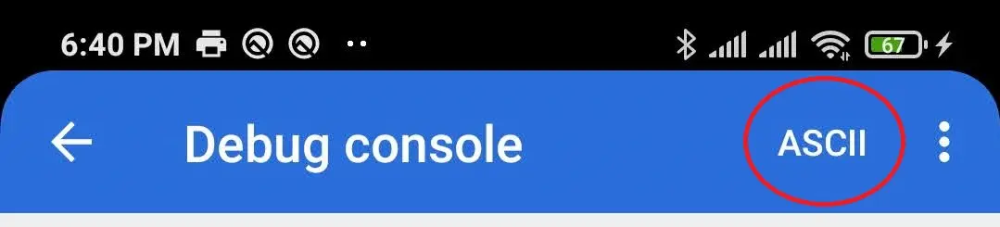
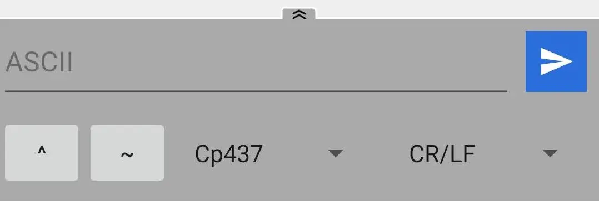
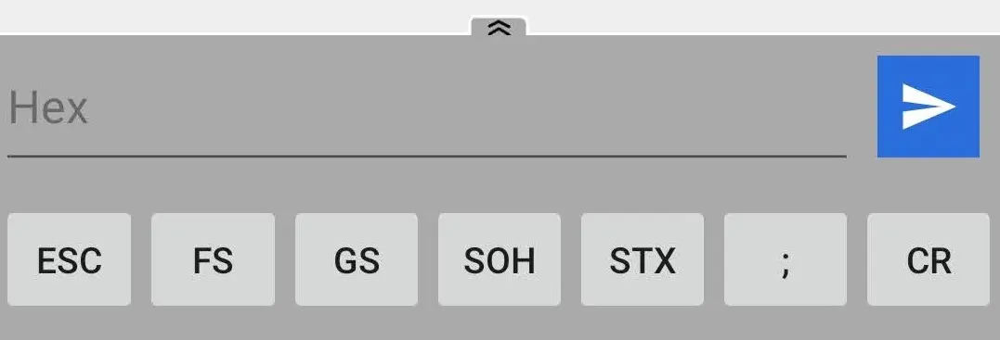
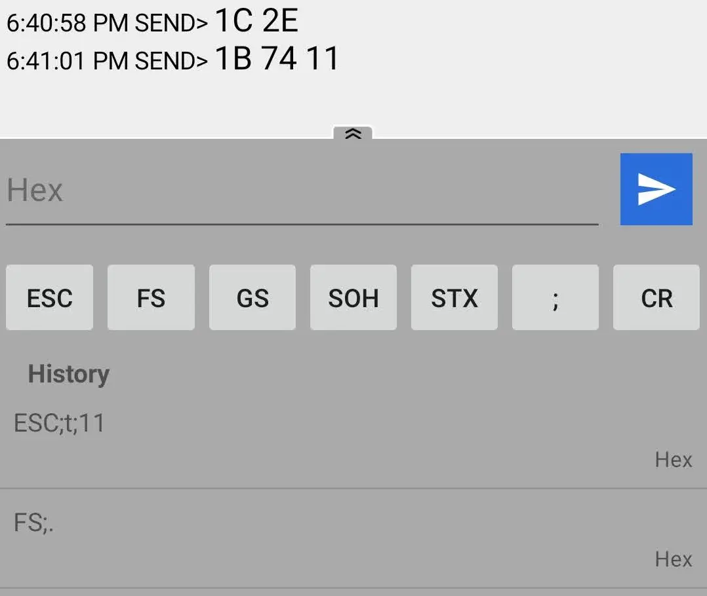
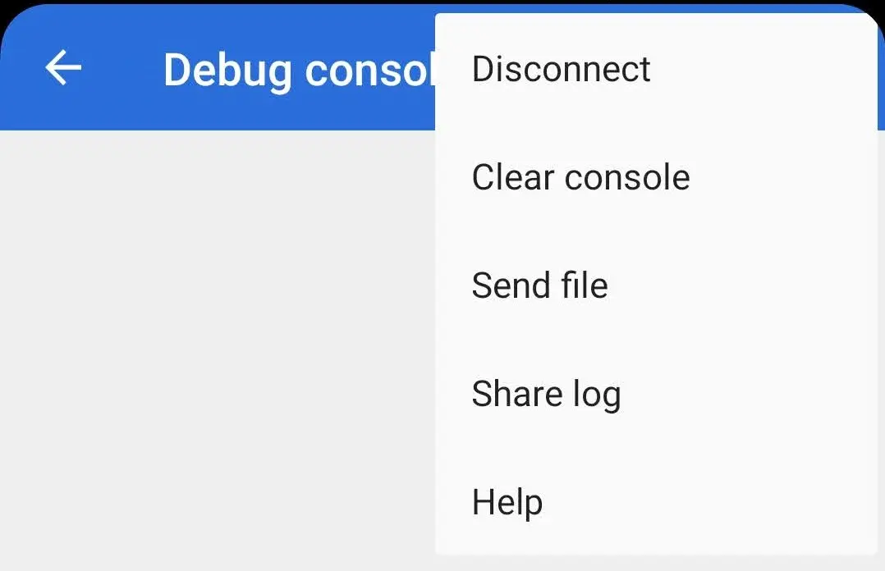

Terminal mode allows you to interact directly with the device. When using terminal functions, the printer becomes inaccessible to other tasks until you perform the detach operation.

Two modes of information exchange with the device are supported. Depending on the selected mode, data is sent and displayed in the console in text or hexadecimal form.
Switching modes is done in the upper right corner of the screen.

You may need to send a few hex commands before the printer can correctly process the desired character encoding.

The same format for entering hexadecimal characters in the terminal and in the additional driver settings.
How to enter bytes
